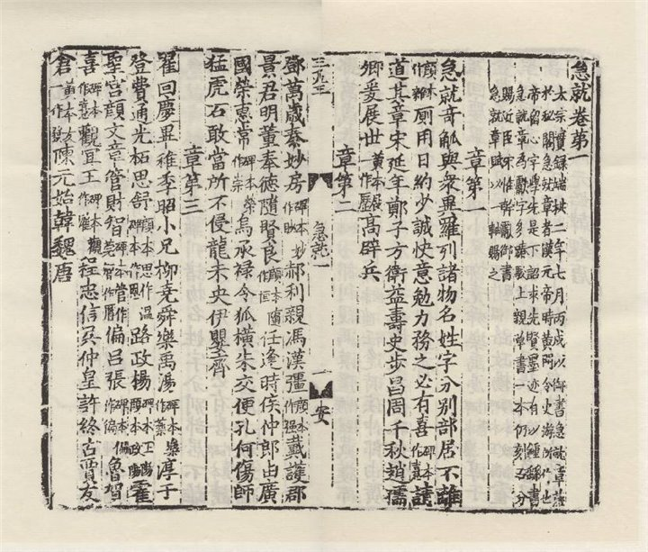
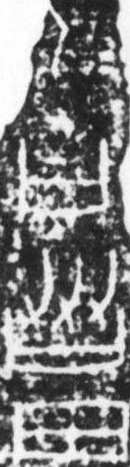
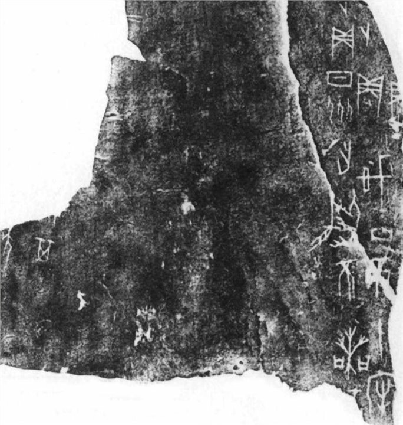

01
古籍
Printed and manuscript pages with dense vertical text, seals, aging paper, and page-layout cues.
AncientBook

A curated paper list for our lab, designed as an archive-style entrance. Each paper opens into a dedicated project page with method, benchmark, results, and visual materials.

Five historical document carriers from the Dataset collection, staged as a compact museum-style gallery.
Printed and manuscript pages with dense vertical text, seals, aging paper, and page-layout cues.
AncientBook

Calligraphy leaves with sparse ink, brush texture, varying stroke density, and open white space.
CalliBench
Stone inscription rubbings and epitaph texts with fragmented surfaces and high-contrast strokes.
Inscription
Narrow bamboo and wooden slip fragments with long vertical proportions and uneven preservation.
JianDu


Oracle-bone fragments with carved signs, broken edges, dark material texture, and sparse symbols.
Oracle

